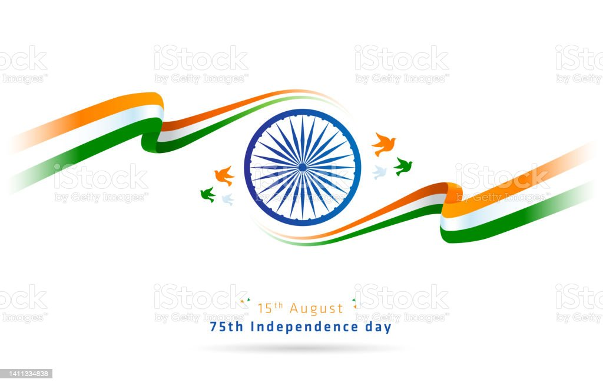

He encouraged young people to sweep away prejudices and gave them new values for living. He stressed the importance of Truth and Non-violence and called the youth to “Be Fearless”. Gandhi is one person who realized the power and potentiality of youth, understanding the dynamics of social change.
The 20th century’s most famous apostle of non-violence himself met a violent end. Mohandas Mahatma (‘the great soul’) Gandhi, who had taken a leading role in spearheading the campaign for independence from Britain, hailed the partition of the sub-continent into the separate independent states of India and Pakistan in August 1947 as ‘the noblest act of the British nation’.

Jai Hind